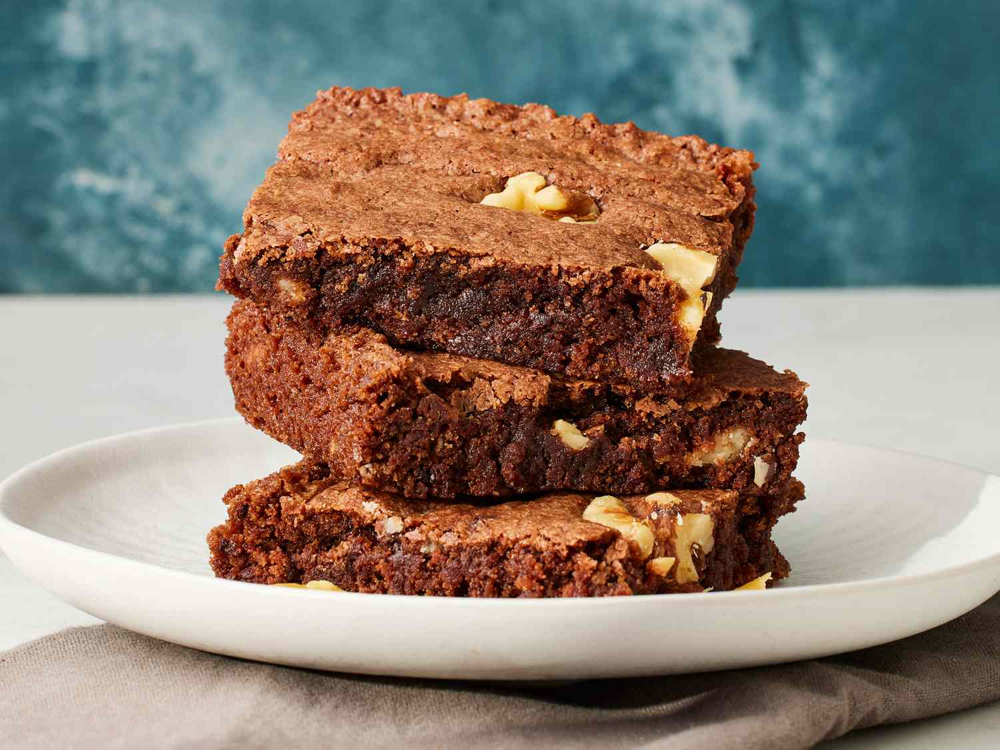

Brownies
Prep: 45 mins
Difficulty: Medium
Serves: 9

Ingredients
- 115g unsalted butter
- 200g dark chocolate, roughly chopped
- 200g caster sugar
- 3 large eggs
- 1 teaspoon vanilla extract
- 80g all-purpose flour
- 30g cocoa powder
- ¼ teaspoon salt
- Optional: ½ cup chocolate chips or walnuts
Instructions
- Preheat your oven to 180°C (350°F). Grease and line a 20cm square baking tin with parchment paper.
- Melt the butter and dark chocolate together in a heatproof bowl set over a pot of simmering water (or microwave in 30-second bursts). Stir until smooth. Let it cool slightly.
- Whisk the sugar into the chocolate mixture, then beat in the eggs one at a time. Add the vanilla extract.
- Sift in the flour, cocoa powder, and salt. Fold gently until just combined — do not overmix.
- If using, stir in chocolate chips or chopped walnuts.
- Pour the batter into the prepared tin and spread evenly. Bake for 22–25 minutes. The centre should still have a slight wobble.
- Allow to cool completely in the tin before cutting into 9 squares. They firm up as they cool!
Back to Home